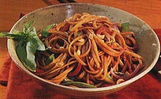

Link to recipe
Szechuan Sesame Noodles
This recipe features ingredients that are widely available in the Asian foods section of most markets. If you like, add snow peas and sliced bell peppers for some crunch
6 Side-Dish Servings
Ingredients
- 8 ounces thin dried Asian noodles or linguine
- 4 tablespoons oriental sesame oil
- 3 tablespoons chopped
- 2 tablespoons finely chopped peeled fresh ginger
- 3 large garlic cloves, minced
- 6 tablespoons bottled teriyaki sauce
- 2 tablespoons fresh lime juice,/li>
- 1 teaspoon chili-garlic sauce
- 1.5 cups thinly sliced green or red onions
Directions
- Cook noodles in a large pot of boiling salted water until tender but still firm to bite.
- Drain; return noodles to same pot.
- Mix in 1 tablespoon oil and peanuts.
- Heat 3 tablespoons oil in heavy small skillet over medium-low heat.
- Add ginger and garlic; stir 10 seconds.
- Add teriyaki sauce, lime juice and chili sauce; simmer 30 seconds.
- Mix sauce and onions into noodles.
- Season with salt and pepper. Serve warm or at room temperature.
Contact Me
Azure Wallace
Email me!
Unviersity of Montana Website